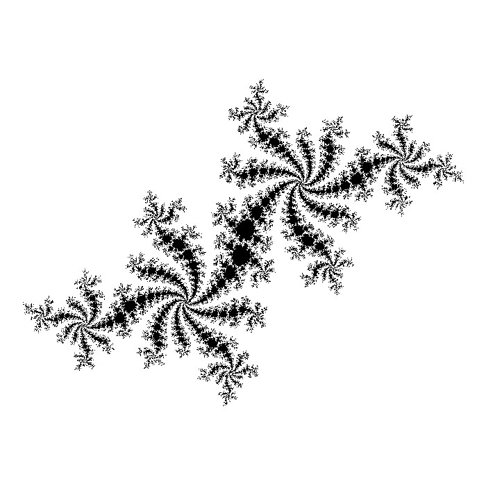

Conjuntos de Julia
Tengo un cubo de Rubik bastante maltratado. Después de algunas caídas (sí, soy un poco torpe), afortunadamente el cubo aún no se ha roto, pero el hecho de que algunas calcomanías de colores se hayan despegado y otras estén ya muy dañadas me hizo pensar que podría hacer mis propias calcomanías. Eso sí, con motivos matemáticos.
El primer motivo, era, claro: números escritos en base 2. Por ejemplo:
010 011 101
Que son los primeros números primos y, además, aparecen al comienzo (aunque no ocupan las primeras posiciones) de la sucesión de Fibonacci.
El segundo motivo, una espiral logarítmica. Por cierto, la sucesión de Fibonacci tiene una curiosa relación con esta clase de espiral.
Un motivo más sería el Glider (o planeador), un patrón reconocible proveniente del Juego de la Vida. Tras la más pequeña de las naves espaciales en la vida -ésta última oración es extraordinaria en cualquier contexto…- se encuentran muchos significados y puntos de vista desde los cuales mirar: autómatas celulares, máquinas de Turing, fenómenos y sistemas emergentes, cultura hacker, e incluso un homenaje al genial John Conway.
Para las 3 caras restantes del cubo había pensado en muchos otros motivos. Por ejemplo, los símbolos de los números Pi, e; una calcomanía de un cubo de Rubik (autorreferencia); un tablero de ajedrez; los últimos dígitos del número de Graham, la banda de Möbius; el copo de nieve de Koch o el conjunto de Mandelbrot.
Como fue imposible elegir sólo 3 motivos más, no tuve más opción que olvidarme del asunto jugando con fractales…
